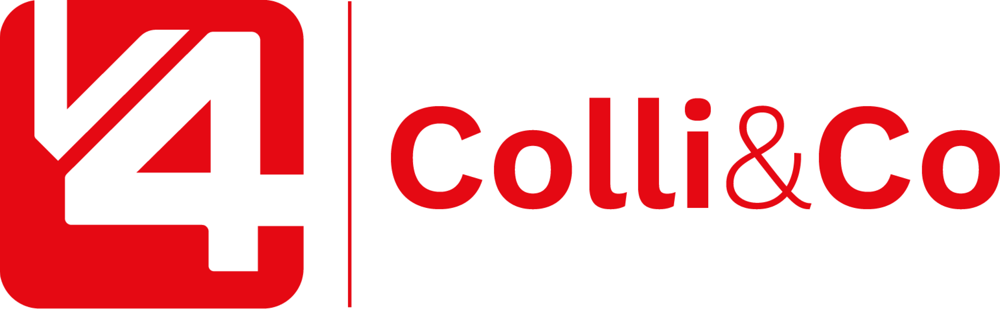

Aquatro
Set/Out 2026
Desempenho de Instagram e Facebook — @aquatrosuprimentoscm, Campo Mourão/PR e região.
Período: 27 de setembro a 26 de outubro de 2026.
Instagram cresceu +68,9% em views, 100% orgânico
Nos últimos 30 dias (27/set a 26/out), o perfil ganhou tração sem nenhum real investido em anúncio — todo o resultado veio de conteúdo orgânico.
Comparação automática da própria plataforma vs. os 30 dias anteriores. Sem conta de anúncios vinculada no Business Manager da Aquatro — todo o crescimento é orgânico.

AQUATRO / SET-OUT 2026Instagram: 236,0 mil visualizações
De onde vieram as visualizações
Não há conta de anúncios vinculada à Aquatro no Business Manager — 100% do resultado é orgânico, sem patrocínio.
Formato publicado no feed (27/set–26/out)
7 publicações no feed no período, além de Stories ao longo do mês. Cadência alinhada ao volume mensal combinado com a Aquatro (8–10 criativos/mês).
Facebook: canal secundário em crescimento
Canal pequeno, mas em alta — e 100% cross-post do Instagram
A Página tem hoje 25 seguidores e todo o conteúdo publicado é o mesmo material do Instagram, replicado automaticamente (sem produção nativa pro Facebook). Mesmo assim, todas as métricas do canal cresceram no período — visualizações, visitantes, cliques e visitas à Página subiram entre 80% e 90%. Como a base ainda é pequena, os números absolutos são baixos; o sinal importante é a direção, que é positiva em tudo.
Atendimento rápido e educação sobre compras lideram
Leitura: o post de maior alcance (415 views) fala direto da dor de atendimento lento — exatamente o diferencial da Aquatro. Carrosséis educativos (catálogo completo, checklist de orçamento) também performam bem e geram comentário, sinal de atenção real do público B2B.
1.350 seguidores — 8 em cada 10 são mulheres
Faixa etária e gênero
Principais cidades
98,7% do público está no Brasil. Perfil confirma o achado de jul/2026: a maioria é feminina, 25–44 anos — não o corporativo masculino padrão esperado para um negócio B2B.
Facebook: 25 seguidores — abaixo do mínimo de 100 que a Meta exige para liberar dados demográficos da Página.
O que o período mostrou e para onde ir
- Crescimento 100% orgânico. +68,9% em views e +43,5% em seguidores sem nenhum real de anúncio — base sólida para avaliar um primeiro teste de mídia paga nos formatos que já performam.
- Dor de atendimento lento é o gancho mais forte. O post sobre fornecedor que demora a responder foi o de maior alcance do período — vale repetir essa linha de "eficiência operacional" nas próximas pautas.
- Carrossel educativo engaja e gera comentário. "Catálogo completo" e "checklist de orçamento 2027" tiveram comentários reais — sinal de interesse qualificado do público B2B, vale manter esse formato.
- Público segue 80,8% feminino, 25–44 anos, em Campo Mourão. Confirma o padrão identificado em jul/2026 — manter tom mais leve sem perder o B2B, como já alinhado.
- Facebook ainda pequeno (25 seguidores) e 100% cross-post. Métricas cresceram em tudo, mas a base é baixa — manter como canal secundário por ora, sem produção nativa dedicada.